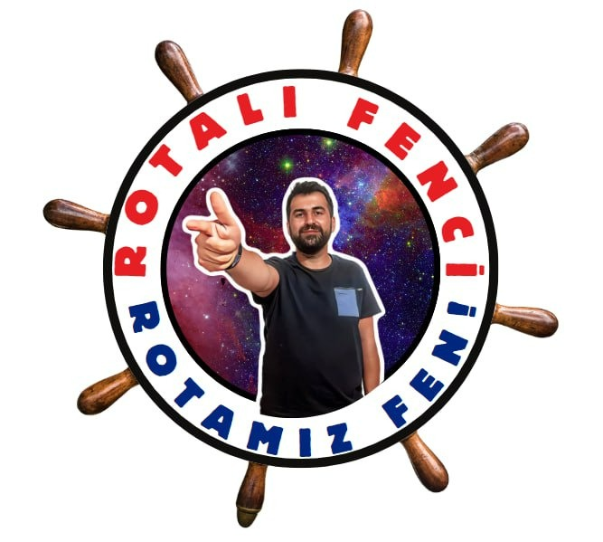

Öğrencilerinizden tahminleri aldıktan sonra doğru hareketi ve yön ibresini başlatmak için seçeneğe dokunun.
Yaparak ve deneyerek astronomik kavramları keşfet!
Gök cisimlerinin kendi ekseninde dönmesi ile bir başkası çevresinde dolanmasını test et.
Kuzey kutbundan bakışta analog saatin ibresi ile gök cisminin dönme yönünü eşleştir.
Ay'ın dönme ve dolanma sürelerinin eşitliğini "Aynı Yüz" pini ile kanıtla.
Dünya'nın 24 saatlik dönüşü ile Ay'ın 27.3 günü ve Dünya'nın 365 gününü karşılaştır.
Güneş kendi ekseni etrafında döner (Ekvator bölgesinde yaklaşık 25 Dünya günü). Güneş katı bir küre olmadığı için (plazma/gaz) farklı enlemleri farklı hızlarda döner. Ayrıca Güneş Sistemi ile birlikte Samanyolu Galaksisi merkezi etrafında dolanır (Dünya çevresinde dolanmaz!).
Dünya kendi ekseni etrafında saat yönünün tersine (batıdan doğuya) 24 saatte döner; böylece gece ve gündüz ardalanır. Güneş çevresinde ise elips bir yörüngede yaklaşık 365 gün 6 saatte (1 yılda) dolanır. 23.5° eksen eğikliği mevsimlerin oluşmasını sağlar.
Ay kendi ekseni etrafındaki dönmesini yaklaşık 27,3 günde tamamlar. Dünya çevresindeki dolanmasını da yaklaşık 27,3 günde tamamlar. Dönme ve dolanma süreleri birbirine eşit olduğu için Dünya'dan bakıldığında Ay'ın hep aynı yüzü görülür (Kütleçekim Kilidi / Synchronous Rotation).